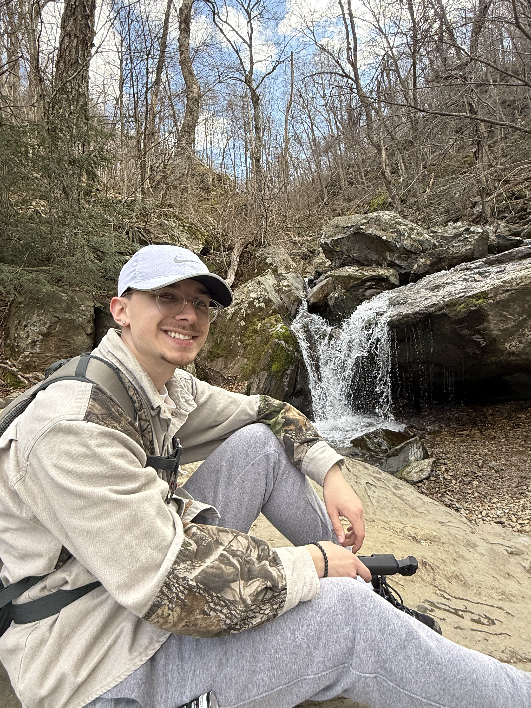

About Me

I am a Computer Programming & Information Systems student
at Farmingdale State College with an associate degree in
Business Administration from Suffolk County Community College.
My completed projects include database-driven websites and
applications that use external APIs. I am also developing
an accessible healthcare mobile application with my capstone
team. I enjoy turning a practical need into software that
is organized and easy to use.
Alongside my coursework, I work in commercial insurance and
assist with technology-related needs. This experience has
helped me understand how software supports everyday
business operations.
Outside of school and work, I enjoy hiking, music, and
hands-on projects. I like learning new skills and working
through challenges, whether I am building an application,
making my way to a summit, or experimenting with music.
Skills
- Programming: Java, JavaScript, PHP, and TypeScript
- Web Development: HTML and CSS
- Databases: SQL and MySQL
- Mobile Development: React Native and Expo
- Tools: Git, GitHub, Figma, and XAMPP